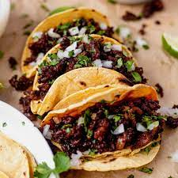

prep: 10m
cook: 25m
difficulty: easy
nutrition
kcal 608
fat 33g
saturates 11g
varbs 59g
sugars 52g
fibre 2g
pretein 7g
salt 0.7g
prep: 10m
cook: 25m
difficulty: easy
kcal 608
fat 33g
saturates 11g
varbs 59g
sugars 52g
fibre 2g
pretein 7g
salt 0.7g
step 1
Heat the oil in a medium pan over a medium heat. Fry the onion and garlic for 8-10 mins until soft. Add the chorizo and fry for 5 mins more. Tip in the tomatoes and sugar, and season. Bring to a simmer, then add the gnocchi and cook for 8 mins, stirring often, until soft. Heat the grill to high
step 2
Stir ¾ of the mozzarella and most of the basil through the gnocchi. Divide the mixture between six ovenproof ramekins, or put in one baking dish. Top with the remaining mozzarella, then grill for 3 mins, or until the cheese is melted and golden. Season, scatter over the remaining basil and serve with green salad.